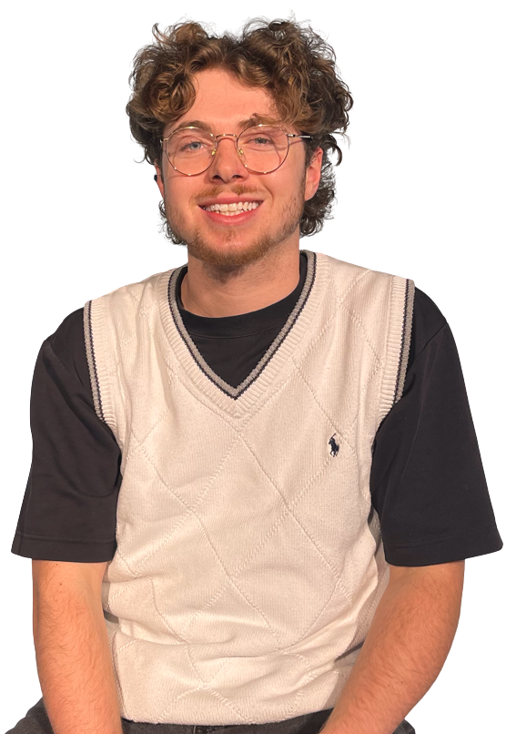

About Me

I am a final-year Mechanical and Mechatronics student at the University of Technology Sydney. I’m highly versed through work experience and multiple projects and am extremely passionate about creating innovative solutions through the emergence of robotics and embedded systems. My main two goals are to improve way of life conditions especially for the disadvantaged, and to revolutionise existing systems in manufacturing and design.
During my time studying, I’ve been blessed to work in two engineering environments, one of them in at a small electronics design and manufacturing company, and the other at a biomechanical startup. At both I’ve seen the importance of culture and motivations, along with the high-end results and customer satisfaction their work brings.
A non-negotiable in my career is my faith in Jesus Christ, to glorify Him through my work means that my motivations stay aligned. I’ve began a social-media profile to showcase the exciting engineering work I do whilst keeping it pure.
Colossians 3:17
Internship Reflection

What were your expectations about your internship before you joined?
Before starting at All-Systems, I was quite nervous as to how different the work-environment would be compared to previous experience, and I honestly expected a stagnant culture which punished mistakes. I was afraid to fall into the intern stereotype, where all the intern does is mess up, waste time and create problems.
What was the reality? How was it different from your expectations?
The reality was that All-Systems Electronics, housed an incredible environment especially for interns to grow and begin their engineering careers. The workplace not only trained me, but my manager Kevin, would mentor and check in, the other workers were all supportive and great to talk with, and my expectations from what an engineering workplace would look like was flipped.
Not only was the workplace great to work and talk with, but all kinds of workers would dedicate time to help teach and train me. Production workers would give me tips and tricks; whilst other design engineers would answer my questions and review my personal projects and work. It was an environment that made it easy to grow.
What lessons were the most important from your internship. Why were they important?
I quickly learnt that it is okay to be unsure, and an even greater thing to be curious. When unsure, it’s important to ask rather than stay quiet so you don’t “bother” other works. As it is much better to learn the right way from the beginning, rather than practice poor technique, design ineffectively or even waste materials and time out of fear of asking.
The other trait, to be curious. Curiosity is a great trait, especially when beginning your career, you should be deeply thinking about all the work you do and never settle with a “it’s just how they’ve always done it” mentality. Curiosity is rewarded with deeper learning, and in the long-term, greater results.
After your workplace experience, what would you say your value proposition would be to an employer? How can you demonstrate this?
I’d argue my value proposition and impact stem from my attention to detail, time & task management, cultural fit and deeper design capabilities. I’ve demonstrated attention to detail through thorough IPC-A-610 training, time management by accounting and completing series of tasks each day during workplace, cultural fit as I’ve loved my time working with the team and am committed to deeper work culture, and deeper design capabilities through the understanding of production and manufacturing along with deeper projects embedded during my time working.
How did your internship influence the type of role in which you are interested?
My internship has sparked deeper interest towards designing engineering roles, however ones with room to adjust and assist in production and manufacturing. Working with a smaller team showed me how designing engineers better their craft by working alongside the manufacturing processes.
Not only that but the type of work and projects ASE completes excites me, especially to work in creating solutions through the emergence of mechatronics, to better people. Some of the projects they’ve worked on range from hospital gas detection systems to car-turbo systems, to custom Turkish Coffee makers and much more! I’d love to build a resume of projects and work that can deeply benefit people and manufacturing, whether it’s for a passion project like the Turkish Coffee Maker, or deeper projects like my Capstone to address the problem of Runners Knee.